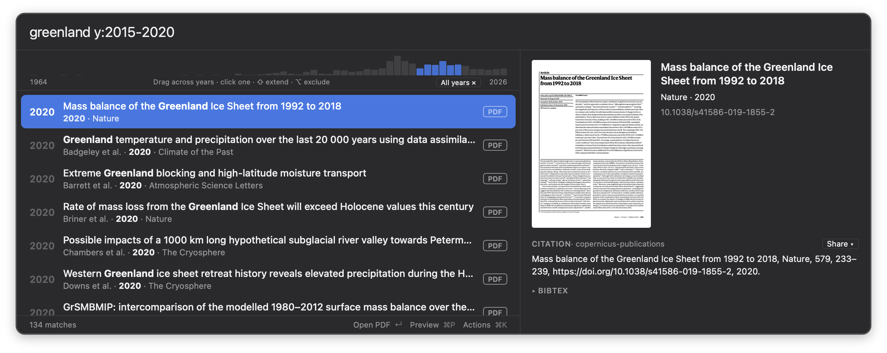
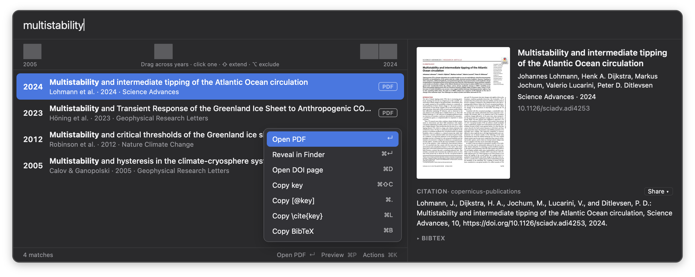
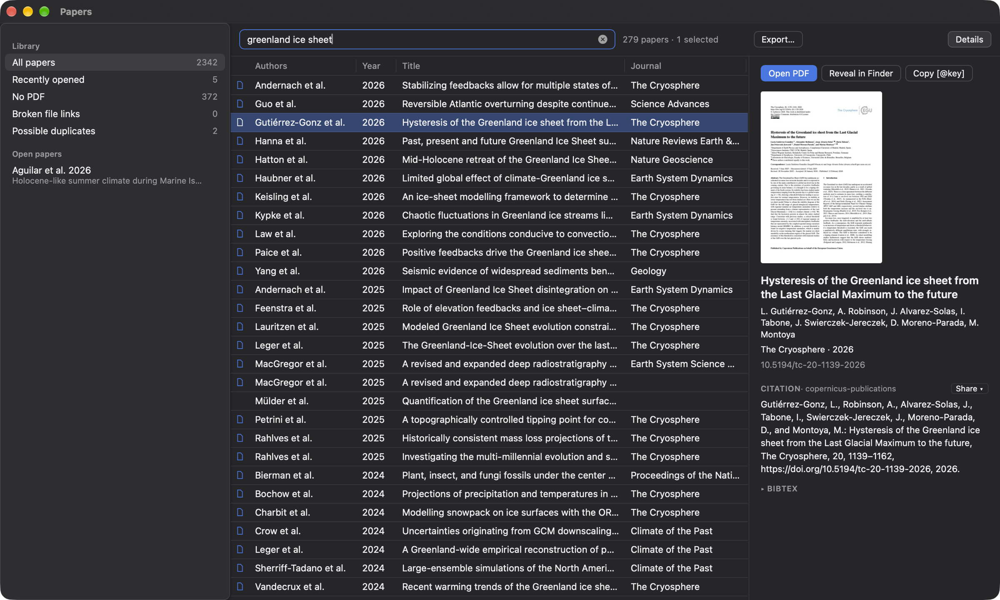
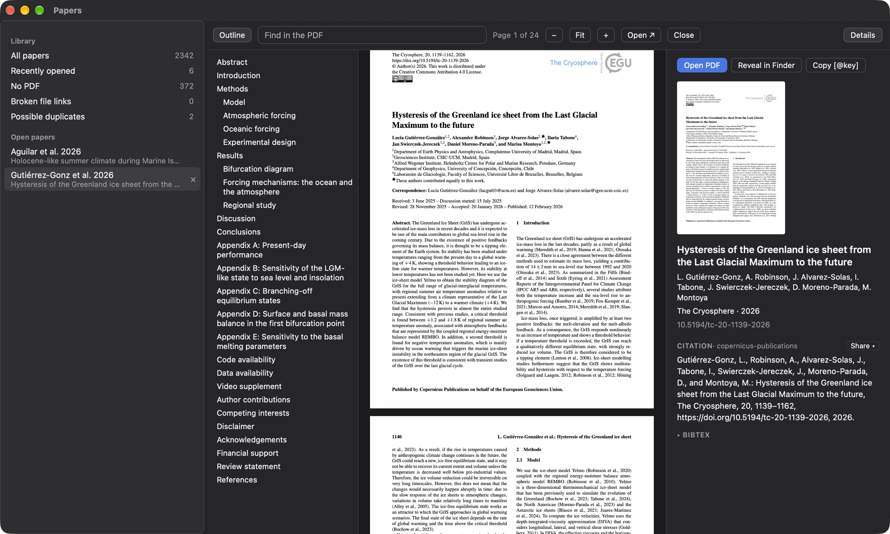

Search the way you remember
Every word must match, from the start of a word: rob finds Robinson. Filters narrow it down:
f: for the first author, y:2010-2015 for years, j: for the journal,
has:pdf for the papers with a PDF, quotes for a phrase, - to leave something out.
Paste a reference from a paper or a web page to find the entries closest to it: the entry of its DOI, else
those with most of its authors, title and year.
Results come newest first, with the matched words in bold. A strip shows the matches of each year: drag
across it to keep a range of years.

Cite in one key
Open the PDF with ↵, copy [@key] for Markdown, \cite{key} for LaTeX,
the BibTeX entry, or the citation, formatted, with ⌘⌥C. ⌘K lists every action.
The preview shows the first page, the citation in your style (Copernicus by default) and the entry, as
formatted or as written in the file.

Your library in a window
Open Library from the menu-bar icon, or ⌘O in the panel: a table of your papers that the same
search filters, with views in the sidebar (recently opened, no PDF, broken file links, possible duplicates)
and your tags. Sort, move, resize and choose the columns.
Export the selection, or the papers of a tag, to a .bib file: the references of a
manuscript.

Read in tabs
↵ opens a paper in a tab of the sidebar, its details beside it. On macOS the PDF shows as in
Preview, smooth to scroll and zoom, with find and the outline. The papers you had open come back the next
time.
Everything has a key: / to search, ⌘1 for the library, ⌃Tab from tab to
tab, ⌘W to close.

Plain files
Reads .bib files as they are, from papers, JabRef, BibDesk or a Zotero export. The PDFs stay
in your folders, where any app opens them.
Always up to date
Change a .bib file with any tool, or let a sync client do it: the panel reloads it at once.
Several libraries
Choose one or more .bib files; the panel searches them all.
Quick
A library of thousands of entries loads in a few tens of milliseconds, and the results follow your typing.
Citation styles
Copernicus, AGU, AMS, Nature, Science, APA and more are built in, and any
CSL style works.
Share
Copy a snippet with the title as a link, the link, the DOI, or the citation as text or HTML. They paste
formatted in documents and mails, as plain text elsewhere.
Drag out
Drag a paper from the list to drop its PDF in a mail, a chat or a folder, and the citation from the
preview to drop it in a document.
From any app
Select a reference anywhere and choose Services → Search Papers to find it in your library. On Linux,
press Ctrl+Alt+Shift+Space.
Recent papers
The empty panel lists the papers you opened or copied last, with a reminder of the keys and filters.
Out of the way
It lives in the menu bar, opens with its hotkey and hides when you go back to work. The library window
is in the Dock only while it is open.
Made with papers
A companion of the papers command line, which adds PDFs to
the library with the right names. Papers Desktop needs nothing else to run.
Open source
Free software under the MIT license, written in Rust with Tauri.